def smooth_light(t):
rise = np.tanh(0.6 * (t - 8.0))
fall = np.tanh(0.6 * (t - 17.0))
y = (700.0 / 2.0) * (rise - fall) + 40.0
return yCombining sleep and circadian models
Circadian rhythms govern our daily patterns of rest and wakefulness and determine when we fall asleep and wake up. However, models such as Forger99 or Hannay19 don’t predict sleep timing or duration. A family of models known as two-process models address this by coupling circadian rhythms with sleep pressure modeling. Here, we explore the two-process model in Skeldon et al. 2023 which combines Forger99’s circadian rhythm with a sleep homeostat that accumulates sleep pressure during wakefulness and dissipates during sleep. The model receives a light schedule as an input and is able to produce realistic sleep timings and durations. It is implemented in circadian.models as Skeldon23.
Regular schedule
In order to obtain a prediction for sleep/wake onset, we need to provide the model with a light schedule. Following the original article, we’ll use a smooth light function defined in the following way:
Then, we can define the schedule, equilibrate the model, and simulate:
schedule = LightSchedule(smooth_light, period=24.0)
dt = 0.01 # hours
days = 5
time = np.arange(8.0, 24 * days + 8.0, dt)
light = schedule(time)
model = Skeldon23()
# equilibrate model
initial_condition = model.equilibrate(time, light, num_loops=20)
# simulate model
trajectory = model(time, initial_condition=initial_condition, input=light)
sleep = model.sleep_state
received_light = model.received_lightNote that the model output constists of:
A
trajectorycontaining the information of the model’s four state variables (\(x\), \(x_c\), \(n\), and \(H\)) over time. Here we have favoredForger99’s notation of variables whereas the original article uses \(x\), \(y\), \(n\), and \(H\) respectively.A
sleeparray containing the sleep state for each timepoint. This is a binary array with 1 indicating sleep and 0 indicating wake.A
received_lightarray encoding the light input to the circadian model for each timepoint. This light input is different from the providedlightarray only in those timepoints where the sleep state is 1 (i.e. asleep).
We can then visualize the predicted sleep windows
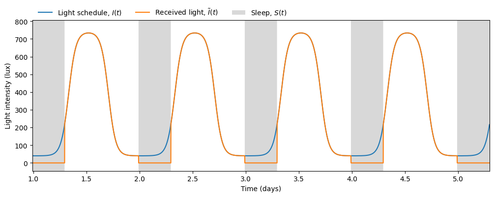
and the circadian state from the \(x\) variable
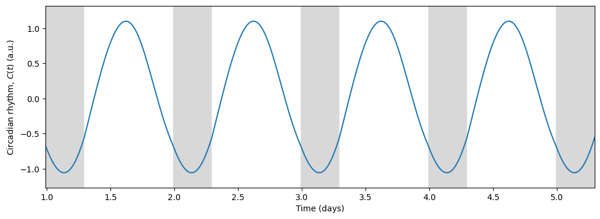
Light, being the primary input to the circadian model, drives the circadian state through the forcing term \(B(t)\):
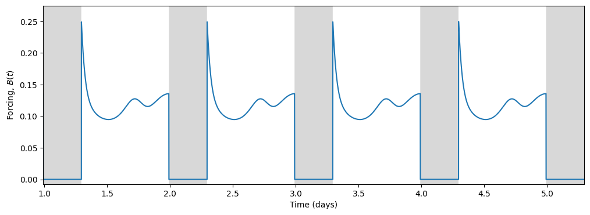
In turn, the circadian state modulates sleep. Skeldon et al. define a function \(C(t)\) that determines the propensity of an individual to go to sleep or wake up.
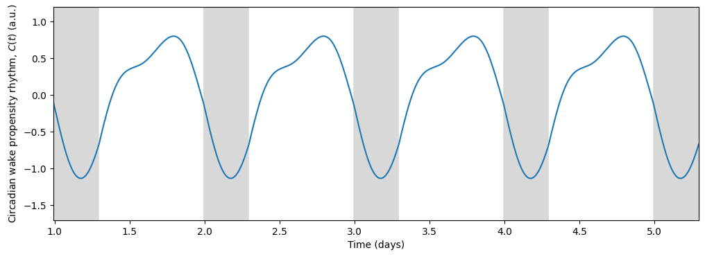
\(C(t)\) determines when the sleep pressure \(H(t)\) has accumulated sufficiently to trigger sleep (at threshold \(H^+\)) and when it has dissipated sufficiently to allow wake (at threshold \(H^-\)).
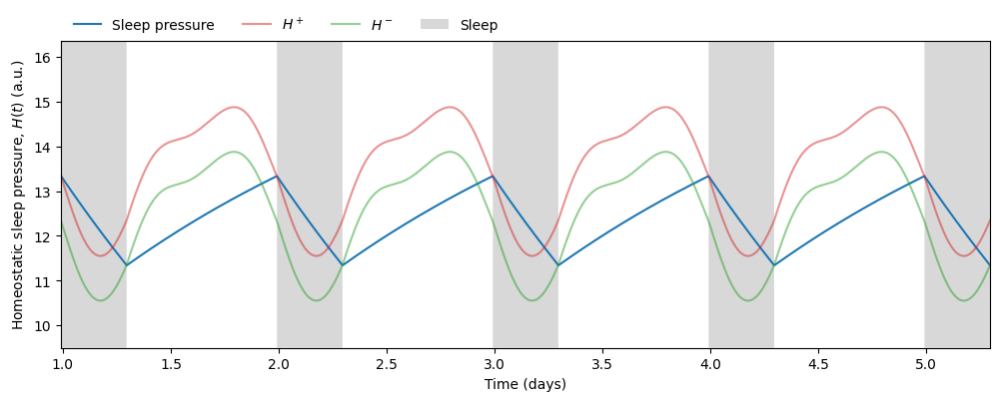
Therefore, given any light schedule and initial conditions we can predict not only the phase of the circadian rhythm but also the timing and duration of sleep. In this simulation we obtain an average sleep timing and duration of
# sleep start
sleep_start_idxs = np.where(np.diff(sleep) == 1)[0]
sleep_start_times = np.mod(time[sleep_start_idxs], 24.0)
avg_sleep_start = circmean(sleep_start_times, high=24.0)
# sleep end
sleep_end_idxs = np.where(np.diff(sleep) == -1)[0]
sleep_end_times = np.mod(time[sleep_end_idxs], 24.0)
avg_sleep_end = circmean(sleep_end_times, high=24.0)
# sleep duration
sleep_end_idxs = np.where(np.diff(sleep) == -1)[0]
sleep_duration = time[sleep_end_idxs] - time[sleep_start_idxs]Average sleep start: 23.79 h, Average sleep end: 7.09 h, Average sleep duration: 7.30 hShift work schedule
The model allows us to explore how much sleep would a shift worker get in a typical light schedule. Applying the same pipeline as above but using LightSchedule.ShiftWork we obtain the following results:
schedule = LightSchedule.ShiftWork()
dt = 0.01 # hours
days = 7
time = np.arange(0, 24 * days, dt)
light = schedule(time)
model = Skeldon23()
# equilibrate model
initial_condition = model.equilibrate(time, light)
# simulate model
trajectory = model(time, initial_condition=initial_condition, input=light)
sleep = model.sleep_state
received_light = model.received_light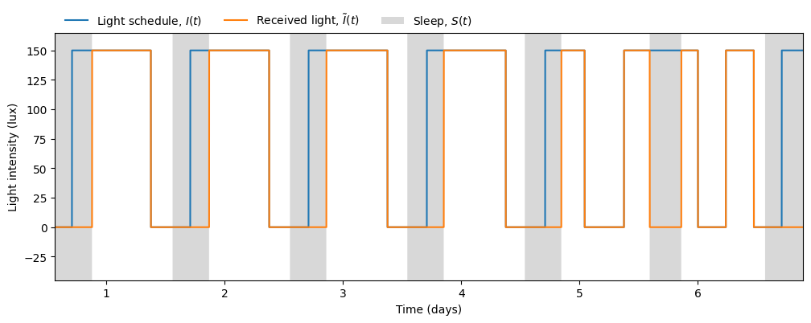
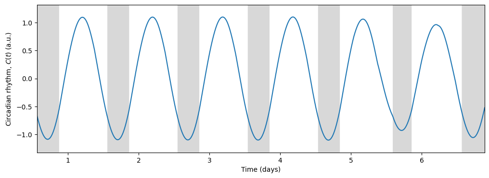
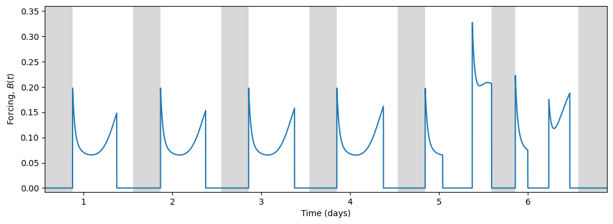
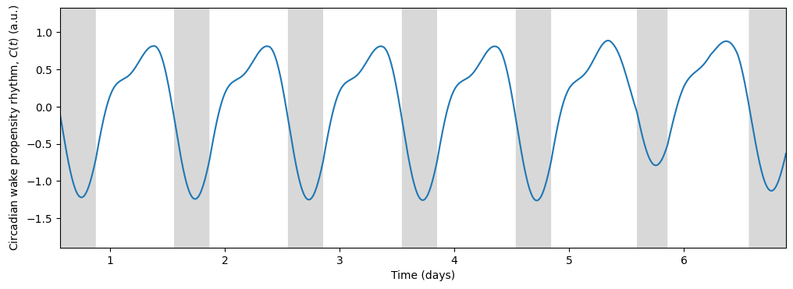

# sleep start
sleep_start_idxs = np.where(np.diff(sleep) == 1)[0]
sleep_start_times = np.mod(time[sleep_start_idxs], 24.0)
avg_sleep_start = circmean(sleep_start_times, high=24.0)
# sleep end
sleep_end_idxs = np.where(np.diff(sleep) == -1)[0]
sleep_end_times = np.mod(time[sleep_end_idxs], 24.0)
avg_sleep_end = circmean(sleep_end_times, high=24.0)
# sleep duration
sleep_end_idxs = np.where(np.diff(sleep) == -1)[0]
sleep_duration = time[sleep_end_idxs] - time[sleep_start_idxs]Average sleep start: 13.41 h, Average sleep end: 20.73 h, Average sleep duration: 7.32 hEven though the sleep duration is not so different from the regular schedule, the sleep timing clashes with the shift in light exposure during days off (days 5 and 6). The model keeps the rhythm of previous shift work days, making it hard to switch to a regular schedule on days off.
Predicted sleep as a function of circadian period \(\tau_c\)
In the original article, Skeldon et al. explore how different parameters affect sleep duration, mid-sleep timing, and circadian state minimum. Using circadian we can do a similar exploration, analyzing how the intrinsic period \(\tau_c\) modulates these quantities under two different light schedules, one with low baseline intensity (10 lux) and one with high baseline intensity (100 lux).
def low_baseline_schedule(t):
rise = np.tanh(t - 7.0)
fall = np.tanh(t - 18.0)
y = ((10000.0 - 10.0) / 2.0) * (rise - fall) + 10.0
return y
def high_baseline_schedule(t):
rise = np.tanh(t - 7.0)
fall = np.tanh(t - 18.0)
y = ((10000.0 - 100.0) / 2.0) * (rise - fall) + 100.0
return y
light_schedules = {
'low_baseline': LightSchedule(low_baseline_schedule, period=24),
'high_baseline': LightSchedule(high_baseline_schedule, period=24)
}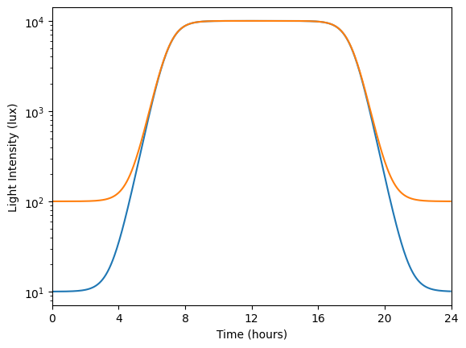
For each value of intrinsic period we equilibrate the system for 60 days and then store 5 days of simulated data:
results = {
'low_baseline': {
'trajectories': [],
'sleep': [],
'sleep_duration': [],
'mid_sleep_time': [],
'circadian_minimum_time': []
},
'high_baseline': {
'trajectories': [],
'sleep': [],
'sleep_duration': [],
'mid_sleep_time': [],
'circadian_minimum_time': []
}
}
dt = 0.05 # hours
days = 5
time = np.arange(0, 24 * days, dt)
intrinsic_periods = np.linspace(23.6, 24.25, 20)
for schedule_name in light_schedules:
schedule = light_schedules[schedule_name]
light = schedule(time)
for tauc in intrinsic_periods:
model = Skeldon23(params={'tauc': tauc})
# equilibrate model
initial_condition = model.equilibrate(time, light, num_loops=12)
# simulate model
trajectory = model(time, initial_condition, light)
# calculate sleep metrics
sleep = model.sleep_state
mid_sleep_time, sleep_duration = sleep_midpoint_and_duration(time, sleep)
circadian_minimum = np.mean(np.mod(model.cbt(), 24))
# store results
results[schedule_name]['trajectories'].append(trajectory)
results[schedule_name]['sleep'].append(sleep)
results[schedule_name]['sleep_duration'].append(sleep_duration)
results[schedule_name]['mid_sleep_time'].append(mid_sleep_time)
results[schedule_name]['circadian_minimum_time'].append(circadian_minimum)We can visualize the effect of the intrinsic period on the predicted sleep windows
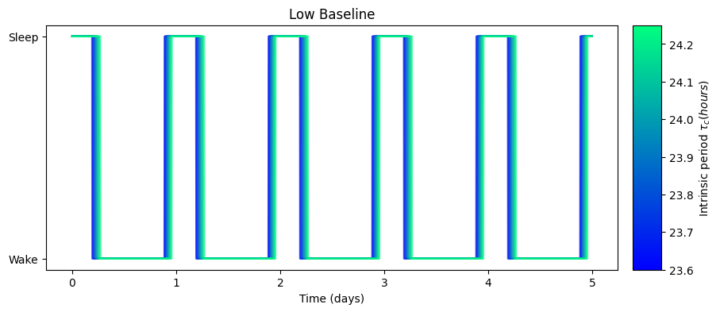
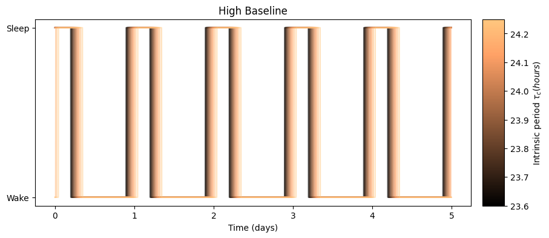
as well as its effect on the circadian rhythm:
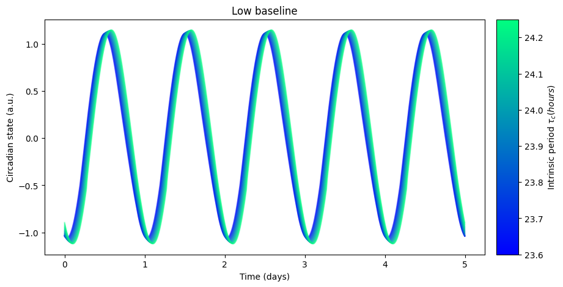
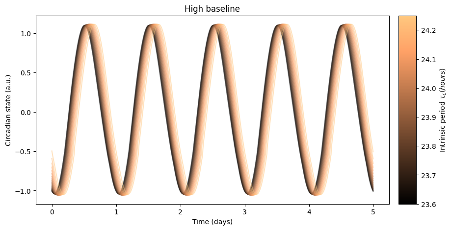
The high baseline simulations seem to affect both sleep and circadian state the most.
The high baseline schedule seems to have a greater effect on sleep and circadian state than the low baseline schedule. On our main simulation loop, we used the function sleep_midpoint_and_duration from the module circadian.utils to quantify these effects. Their plots are shown below and confirm this observation in agreement with the results from Skeldon et al. 2023:

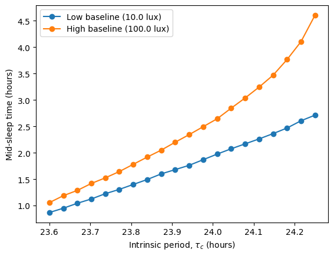
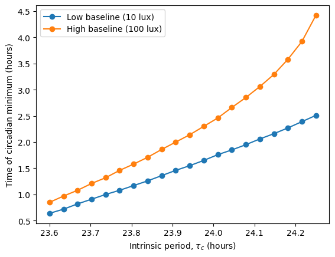